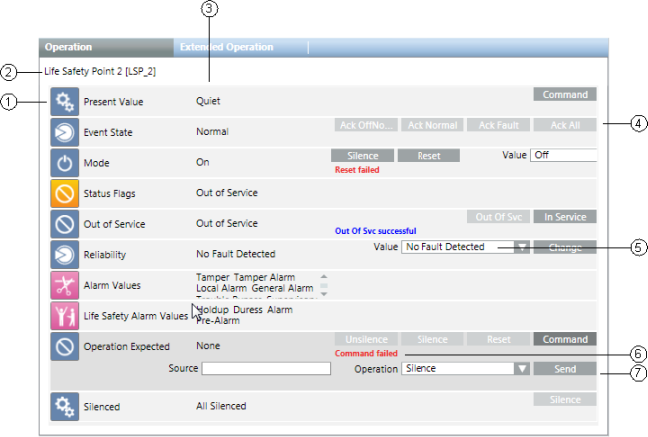

Workspace
The Extended Operation tab displays the name of the currently selected object(s), a list of properties associated with the object(s), the current value of the properties, and command buttons for initiating commands on commandable properties.

Extended Operation Workspace | ||
| Name | Description |
1 | Property name | Displays the name of one or more properties associated with the selected objects. If you select multiple objects of the same type in the system, the icon next to the property name indicates this with a triangular symbol in the lower-right-hand corner. Clicking this symbol expands the table row to show all of the selected objects of the same type that share this property. You can then change all properties for the selected objects at the same time. |
2 | Object name | The name of the selected object. If you selected more than one object to display, the default object name is Multi-Select. |
3 | Current value | Displays the current value of each property. |
4 | Command button | Displays the name of a command that you can initiate. Some commands are sent immediately after you initiate them by releasing the command button. Others require you to enter arguments before they can be sent. When a command requires arguments (additional fields requiring information to continue with the command), the property row will expand after you click the command button. You then complete the additional fields and click the appropriate button (Send, Command, Change, Ack, and so on). Some object properties support grouping of command buttons that occupy the space of one button, with a drop-down list of your choices. The button you choose from the drop-down list becomes the new commandable button in the group. |
5 | Parameter | When you initiate a command that requires additional parameters, the system prompts you to enter one or more parameters prior to sending the command. You must complete all required parameters before sending the command. A parameter field that displays a red border around it means that the value for that property is invalid. If that is the case, you will need to enter a valid value before commanding the property. |
6 | Command Feedback area | Displays the progress and then the result of a command once you execute a command. During the command, the Command Feedback area displays |
7 | Send button | The Send button displays only for commands that require additional arguments. Clicking this button sends a command after you have entered all required arguments. |